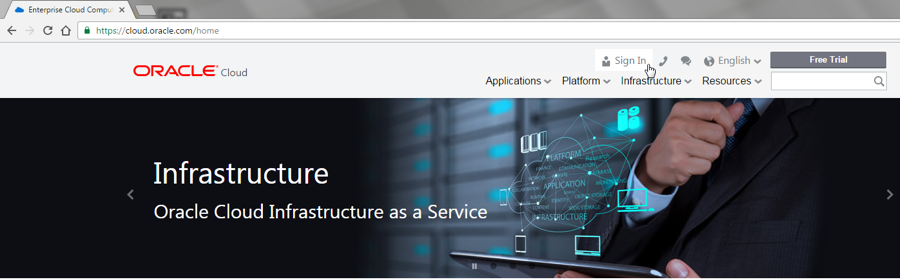
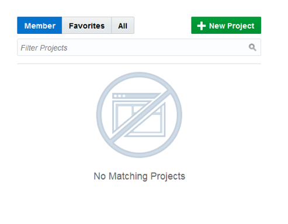
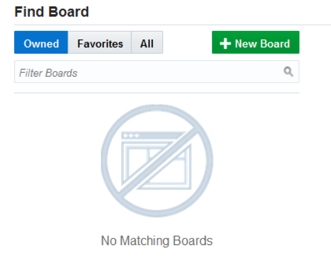
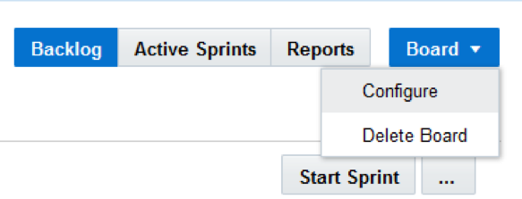

Update: January 29, 2017
Introduction
This is the first of several labs that are part of the DevOps JCS Pipeline using Oracle Stack Manger workshop. This workshop will walk you through the Software Development Lifecycle (SDLC) for a Java Cloud Service (JCS) project that go through Infrastructure as Code and deployment of Struts application.
You will take on 3 Personas during the workshop. The Project Manager Persona will create the projects, add tasks and features to be worked on, and assign tasks to developers. The Project Manager will then start the initial sprint. The Operations persona will develop a new pipeline for deployment of JCS and DBCS environment. The Java Developer persona will develop a new struts based UI to display the product catalog. During the workshop, you will get exposure to Oracle Developer Cloud Service, Java Cloud Service and Oracle Stack Manager.
Please direct comments to: Dennis Foley (dennis.foley@oracle.com)
Objectives
- Create Initial Project
- Create Issues / Task
- Create Agile Board and initial Sprint
- Add Issues to Sprint
Required Artifacts
- The following lab requires an Oracle Public Cloud account that will be supplied by your instructor.
Create Developer Cloud Service Project
Create Developer Cloud Service Project
Step 1: Login to your Oracle Cloud Account
From any browser, go to the URL:
https://cloud.oracle.com
click Sign In in the upper right hand corner of the browser

IMPORTANT - Under my services, ask your instructor which Region to select from the drop down list, and click on the My Services button.

Enter your identity domain and click Go.
NOTE: The Identity Domain, User Name and Password values will be given to you by the instructor.

Once you Identity Domain is set, enter your User Name and Password and click Sign In
NOTE: For this lab you will assume the role of Project Manager Lisa Jones. To make things simple we will be using a single login for all 3 roles.
You will be presented with a Dashboard displaying the various cloud services available to this account.

If all of your services are not visible, click on the Customize Dashboard, you can add services to the dashboard by clicking Show. If you do not want to see a specific service click Hide
Step 2: Login to Developer Cloud Service
Oracle Developer Cloud Service provides a complete development platform that streamlines team development processes and automates software delivery. The integrated platform includes an issue tracking system, agile development dashboards, code versioning and review platform, continuous integration and delivery automation, as well as team collaboration features such as wikis and live activity stream. With a rich web based dashboard and integration with popular development tools, Oracle Developer Cloud Service helps deliver better applications faster.
From the Cloud UI dashboard click on the Developer service. In our example, the Developer Cloud Service is named developer99019.

The Service Details page gives you a quick glance of the service status overview.

Click Open Service Console for the Oracle Developer Cloud Service. The Service Console will list all projects for which you are currently a member.

Step 3: Create Developer Cloud Service Project
Note: A Private project will only be seen by you. A Shared project will be seen by all Developer Cloud users. In either case, users need to be added to a project in order to interact with the project.
Leave default template set to Empty Project and click Next

Select your Wiki Markup preference to MARKDOWN and click Finish.

The Project Creation will take about 1 minute.
You now have a new project, in which you can manage your software development.
Create Project Issues
Create Issues for the Opperations Pipeline
In this step you are still connected in the logical role of the Project Manager, Lisa Jones
Step 4: Create and Issue for the initial GIT Repository Creation
Click Issues on left hand navigation panel to display the Track Issues page.
Click New Issue. Enter the following data in the New Issue page and click Create Issue.
Note: no matter who you assign as the task “physical” owner, for the sake of this workshop, Bala Gupta will be the “logical” owner.
Summary: Create Initial GIT Repository for Infrustructure and configure Build
Description: Create Initial GIT Repository for Infrustructure and configure Build
Type: Task
Owner: Cloud Admin (or you, if another user is not available)
Story Points: 1
Note: Story point is an arbitrary measure used by Scrum teams. This is used to measure the effort required to implement a story. To learn more, go to this URL:
https://agilefaq.wordpress.com/2007/11/13/what-is-a-story-point/
Step 5: Create Issue for Provision New Alpha Office Environment
Click New Issue. Enter the following data in the New Issue page and click Create Issue.
Note: no matter who you assign as the task “physical” owner, for the sake of this workshop, Bala Gupta will be the “logical” owner.
Summary: Provision new Alpha Office Environment
Description: Provision new Alpha Office environment and increment the identifier
Type: Task
Owner: Cloud Admin (or you, if another user is not available)
Story: 2
Create Issues for Alpha Office UI
Step 6: Create Issue for initial GIT Repository creation and setup
Click New Issue. Enter the following data in the New Issue page and click Create Issue.
Note: no matter who you assign as the task “physical” owner, for the sake of this workshop, John Dunbar will be the “logical” owner.
Summary: Create Initial GIT Repository for Alpha Office UI
Description: Create Initial GIT Repository for Alpha Office UI and setup Build and Deployment configuration
Type: Task
Owner: Cloud Admin (or you, if another user is not available)
Story: 1

Step 7: Create Issue for Displaying Price
Click New Issue. Enter the following data in the New Issue page and click Create Issue.
Note: no matter who you assign as the task “physical” owner, for the sake of this workshop, John Dunbar will be the “logical” owner.
Summary: Add dollar sign in the display of the price
Description: Add dollar sign in the display of the price
Type: Defect
Owner: Cloud Admin
Story: 2
Click the < Defect 4 on the left side of the window, or click on Issues menu option to view all newly created issues.
Create Agile Board
Create Agile Board and Initial Sprint
Before you start using the Agile methodology in Oracle Developer Cloud Service, it is important that you know the following key components of the Agile page.
- Board – A Board is used to display and update issues of the project. When you create a Board, you associate it with an Issue Query. The Board shows Issues returned by the Query.
You can either use a Board created by a team member, or create your own Board. You can create as many Boards as you like.
- Sprint – A Sprint is a short duration (usually, a week or two) during which your team members try to implement a product component.
You add the product component related issues to a Sprint. When you start working on a product component, you start (or activate) the related Sprints. To update issues using a Sprint, you must first activate the Sprint and add the Sprint to the Active Sprints view.
- Backlog view – Lists all Issues returned by the Board’s Query. The view also displays all active and inactive Sprints of the Board, and the sprints from other Boards that contain Issues matching the Board’s Query.
Each Sprint lists issues that are added to it. The Backlog section (the last section of the Backlog page) lists all open issues that are not part of any Sprint yet. The Backlog view does not show the resolved and closed Issues.
- Active Sprints view – Lists all active Sprints of the Board and enables you to update an Issue status simply by dragging and dropping it to the respective status columns.
- Reports view – select the Burndown Chart tab to display the amount of work left to do in a Sprint or use the Sprint Report tab to list open and completed Issues of a Sprint.
Step 8: Create Agile Board
Click Agile on the Left Side Menu to display a page listing all existing Boards.

Click New Board and enter the following data. When done click Create.
Name: AlphaOffice
Estimation: Story Points
Step 9: Create Sprint
Step 10: Add Backlog Issues to Sprint
Customize Agile Board
Step 11: Customize Board
In the following step you will customize an Agile Board, and add a new Progress State. If you desire more information about States and Conditions, the following link will provide a tutorial:
http://www.oracle.com/webfolder/technetwork/tutorials/obe/cloud/developer/AgileDevelopment/AgileDevelopment.html
Now we will show you how you can customize your board. In the right hand side click Board -> Configure

Note: Before we create a new progress state, we want to un-assign some of the conditions that will be used in the new state. You can’t add new conditions or removed conditions, however, you can redefine progress states to suit your project’s needs and move conditions from one state to another. A large number of conditions are assigned to the Completed state by default.
Click on Progress States, then click Completed state. In the lower left panel of the window, scroll down the conditions and select all the RESOLVED conditions. Click the > icon to move them over to the Unassigned Conditions panel.
Hightlight all the RESOLVED unassigned conditions, and clikc < to move them over to the Conditions column.

With the Verify Code highlighed, click on the  to move Verify Code above the Completed Process State.
to move Verify Code above the Completed Process State.

Click Save Sprint. Leave defaults and click Start

Now click on Active Sprints to view the Sprint dashboard.
Click on Reports button to view the Burndown Sprint reports.
You are now ready to move to the next lab.